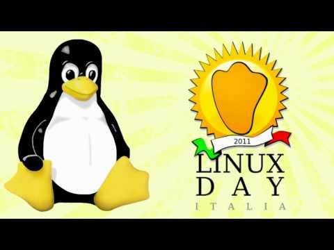

Linux Day Walter Garcia

Il Linux Day e' una manifestazione nazionale unitaria articolata in varie manifestazioni locali.
Essendo volto a favorire un'ampia diffusione e conoscenza di GNU/Linux e del software libero.
il Linux Day si rivolge principalmente al grande pubblico.
Il Linux Day ha lo scopo di promuovere l'uso e la conoscenza del sistema operativo GNU/Linux e del software libero.
Il Linux Day e' promosso da Italian Linux Society (ILS) ed organizzato localmente da gruppi di appassionati e simpatizzanti delle tematiche proprie della manifestazione, spesso aggregati in Linux User Group (LUG). La responsabilita' dei singoli eventi locali e' lasciata ai rispettivi gruppi organizzatori, che hanno liberta' di scelta per quanto riguarda i dettagli delle iniziative locali, nel rispetto delle linee guida generali definite da ILS. La manifestazione e' nata nel 2001 per iniziativa di Davide Cerri e Antonio Gallo di ILS, con lo scopo di valorizzare la rete dei LUG italiani organizzando una manifestazione di portata nazionale ma allo stesso tempo delocalizzata sul territorio. La prima edizione del Linux Day si e' tenuta il 1 dicembre 2001 in circa quaranta citta' sparse su tutto il territorio nazionale. Il successo via via crescente ha reso il Linux Day la principale manifestazione italiana no profit dedicata a GNU/Linux e al software libero. Le edizioni successive si sono tenute
Andando avanti con gli anni ha riscontrato molto successo e ha reso il Linux Day la principale manifestazione italiana no profit dedicata a GNU/Linux e al software libero.